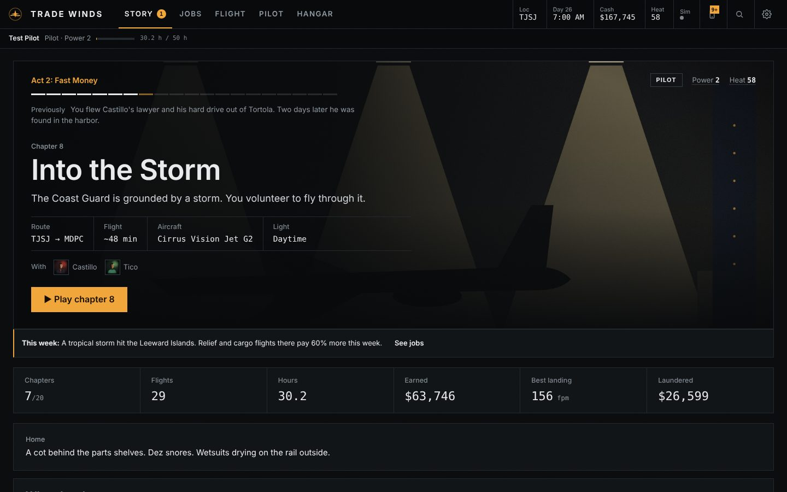
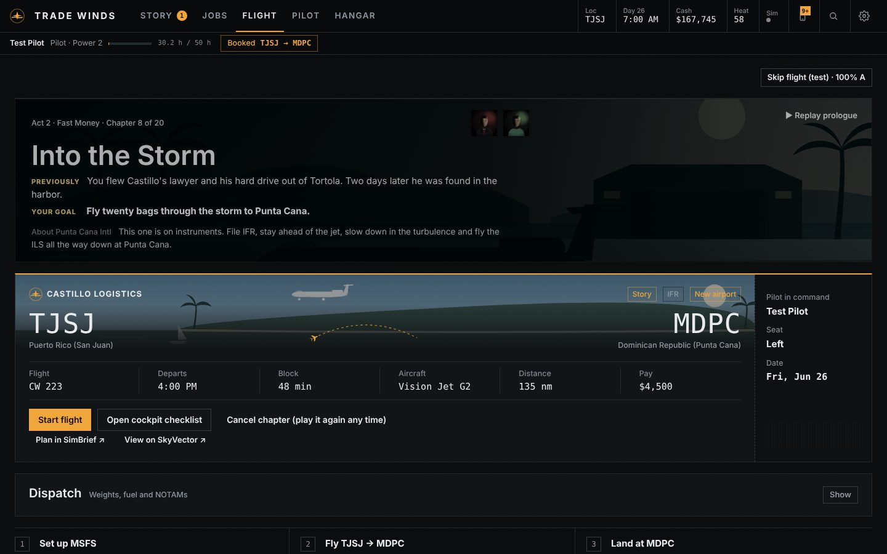
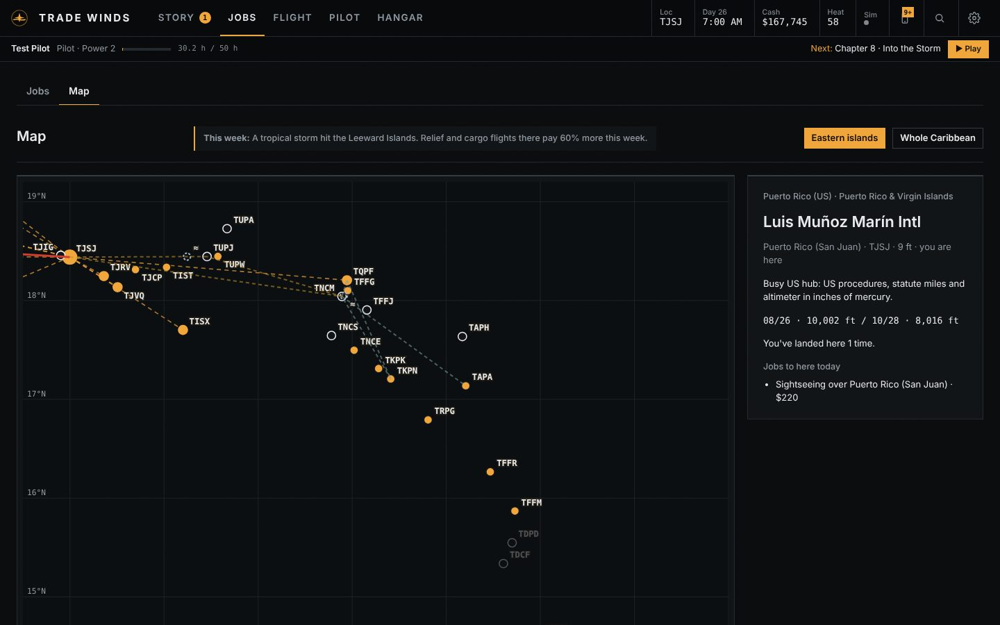
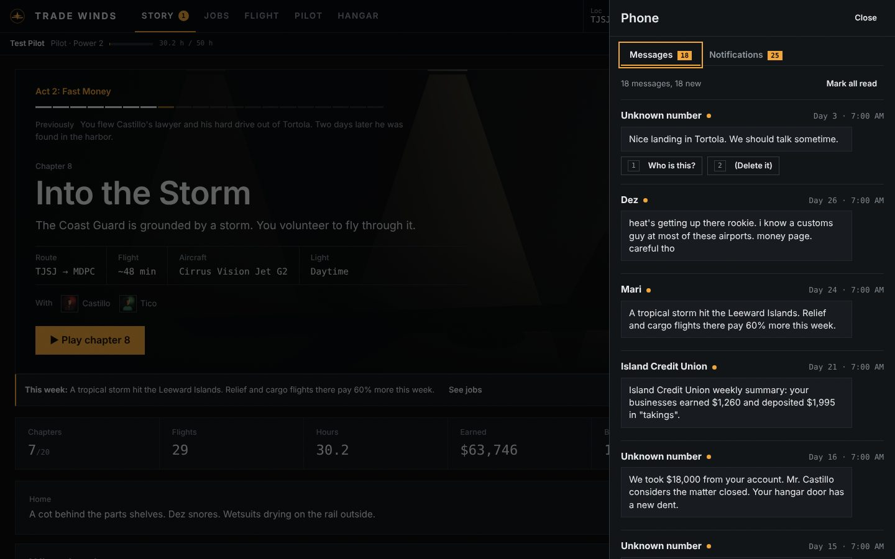

The game
Not a job board. A story with choices and endings.
Career add-ons give you cargo. Trade Winds gives you Castillo, a soft-spoken businessman who needs a pilot who doesn't ask questions, and a DEA agent who has started asking them about you.
Twenty chapters
Every chapter is a real flight
Each chapter has a route, an aircraft role and a goal. Fly it in the sim, then live with what you chose. Five acts, several endings and a New Game+ where someone else is the leak.

Live from the sim
It knows how you flew
The flight starts when your engine runs and ends when you park. Mid-flight orders come in: climb away from a shadowing jet, stay under 1,000 feet, take the Coast Guard's call. The landing is graded.

Between chapters
Your own corner of the Caribbean
Side jobs, checkrides, an airline to run, businesses that wash money, a customs officer who can be paid, and Heat that rises every time you push your luck.

Made for streams
Let Twitch chat decide
Turn on chat voting and your viewers pick the story choices by typing 1, 2 or 3. Texts from the cast land on an in-game phone between flights.
